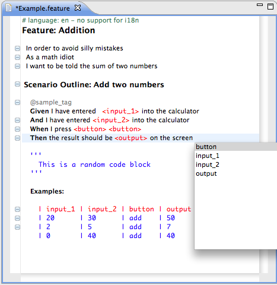

The editor provides syntax highlighting, syntax validation (and some code completion) for cucumber features definitions for Eclipse. The implementation is based on Xtext.
Xtext 2.0
Eclipse Public License - v 1.0 http://www.eclipse.org/legal/epl-v10.html
Sebastian Benz (@sebabenz)